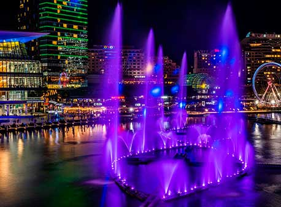
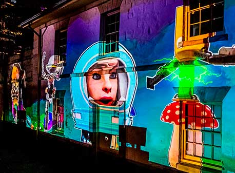
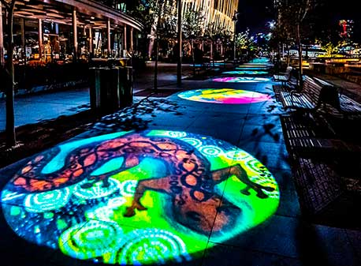

Vivid Sydney cuenta una historia de la ciudad portuaria más allá de los iconos, sobre leyendas urbanas,
espacios secretos y visiones para el futuro.
Este año, el festival cuenta con el paseo de las luces más largo de la historia del evento,
desde la Ópera de Sídney hasta la Estación Central, y una vez más la Ópera de Sídney estará iluminada para la
iluminación de las velas.
El espectáculo captado por un drone
Sydney Infinity
Darling Harbour es el escenario del mayor "espectáculo de luz y líquido" jamás visto en la
historia de Australia, creado especialmente para Vivid Sydney. La
inmensa escala del recinto exige un espectáculo que llame la atención y este despliegue a gran escala
utiliza una tecnología nunca vista en Australia para llevar el arte de la luz y la coreografía acuosa a
un nivel completamente nuevo.

Gravitational Grid
Esta obra monumental explora el fenómeno de la gravedad como fuerza rectora que une la
existencia en todo el universo. A través de la luz, el sonido y una narrativa multisensorial,
la escultura nos reúne y capta de forma especulativa las trayectorias alternativas en el ciclo vital de
las estrellas.
Crowded Cadmans
Experimente una obra de arte animada en 3D que sale directamente de la imaginación de artistas de
Sídney que viven con una discapacidad. Conozca a su elenco de personajes que viajan en el
tiempo -Especimen 10, Jessica la Astronauta, Pinky Moon, Robo-fly y otros- mientras colaboran para
restaurar el orden en nuestra compleja ecosfera.


The Gallery
Vea cómo el Paseo Wulugul de Crown Sydney se transforma en una
impresionante galería visual de proyecciones de luz en la que participan las Primeras Naciones y
artistas locales emergentes del oeste de Sydney.
Sydney Infinity
Diseñados y construidos especialmente para Vivid Sydney, cientos de chorros y boquillas con múltiples
texturas abren el agua en formas cambiantes y fuentes expresivas, todo ello con una banda sonora que se adentra
en el alma de Sydney. Un impresionante conjunto de 48 cañones de agua de aire comprimido ofrece un poderoso
crescendo de maravillas visuales y ondas sónicas que garantizan que sus sentidos se estremezcan.
Gravitational Grid
Artistas: REELIZE.STUDIO (Australia) / Jobe Williams (Australia) / Tomas Kacerik (Australia)
Colaboradores: Krasang (Tailandia) / Mark Douglas Williams (Australia) / Light-Ctrl (Australia) / BRIGHTLY
(Estados Unidos) / Tilt Industrial Design (Australia)
Esta obra monumental explora el fenómeno de la gravedad como fuerza rectora que une la existencia en todo
el universo. A través de la luz, el sonido y una narrativa multisensorial, la escultura nos reúne y
capta de forma especulativa las trayectorias alternativas en el ciclo vital de las estrellas.
La gravedad afecta a todas las cosas con masa o energía y las acerca unas a otras. Es responsable del nacimiento
de las galaxias y de la relatividad perceptiva del tiempo y el espacio. Aunque es imposible de presenciar con la
percepción sensorial humana, la escultura actúa como un dispositivo que desvela la complejidad del efecto de la
gravedad sobre la luz y su omnipresente interconexión con todas las formas.
La luz, el sonido, la estructura y los espacios que crean desempeñan un papel fundamental en nuestros rituales,
que pueden conducir al significado, la comprensión y la trascendencia. En respuesta a los recientes
acontecimientos que han distanciado nuestro cuerpo social y separado a las personas de todo el mundo, la obra
es un monumento a la importancia de la experiencia comunitaria. Nos reúne de nuevo, como la gravedad.
País representado por la instalación: Australia
Crowded Cadmans
Artista: UNSW Sydney
Artistas: Karen Kriss (Australia), Tommy Duong (Australia), Dominic Lagudi (Australia), Melissa Morrison
(Australia), Peter Pang (Australia), Rahul Parmesh (Australia), Thao Phan (Australia), Michella Rolls (Australia),
Theresa Serevi (Australia), Michael Tran (Australia).
Colaboradores: Zac Levi (Australia), Emilia Hornas (Australia), Melody Li (China), Chris Campbell
(Australia), Janelle Mihas (Australia), Learne Brischetto (Australia), Terri Leonard (Australia), Mathew Lattin
(Australia), Jerome Germain (Francia), Saransh Agrawal (India), Dominique Altamura (Australia), Phillip Lange
(Australia), Sydney Ong (Singapur), Kevin Garbourg (Australia), Olivia Spurling (Australia), Ant Banister
(Australia), Joe Holloway (Australia), Michael Cohen (Australia), Steven Shears (Reino Unido), Shirley Yang
(Australia), Andrew Lilja (Australia), Carla Corradi (Chile).
Experimente una obra de arte animada en 3D que sale directamente de la imaginación de los artistas de
Sidney que viven con discapacidad. Conozca a su elenco de personajes que viajan en el tiempo -Especimen
10, Jessica la Astronauta, Pinky Moon, Robo-fly y otros- mientras colaboran para restaurar el orden en nuestra
compleja ecosfera.
Utilizando una variedad de métodos creativos diferentes, cada artista aporta un enfoque único al desarrollo de
sus criaturas. Si te fijas bien, puede que incluso veas a los propios artistas escondidos en la obra.
Desarrollado conjuntamente con la facultad de Arte, Diseño y Arquitectura de la Universidad de Nueva Gales del
Sur, el proyecto es una forma de desafiar las barreras de acceso existentes para los artistas que viven con
discapacidad y se convierte en una fuerza de cambio social.
País representado por la instalación: Australia
The Gallery
Vea cómo el Paseo Wulugul de Crown Sydney se transforma en una impresionante galería visual de
proyecciones de luz en la que participan las Primeras Naciones y artistas locales emergentes del oeste de
Sydney.
Las obras de arte han sido creadas por los participantes del programa Solid Ground del Evans High School
Blacktown, el Chifley College Dunheved Campus, el Chifley College Bidwill Campus y el grupo "Young Mums and Bubs"
de la Baabayn Aboriginal Corporation. Los diseños recopilados reflejan la comunidad y muestran una diversidad de
técnicas, composiciones y estilos.
Un espectro de colores y efectos de animación siempre cambiantes cubren el oscuro
paisaje, trabajando en armonía para crear una inmersiva y amplia galería de luz. Déjese cautivar por la luz que
se transforma, evoluciona y reinventa constantemente parte del Paseo Wulugul.
Presentado en colaboración con Crown Sydney, Carriageworks, Blacktown Arts, propiedad del Ayuntamiento de
Blacktown, y el programa Solid Ground.
Solid Ground es una iniciativa de Carriageworks y Blacktown Arts, propiedad del Ayuntamiento de Blacktown y
gestionada por él, que ofrece vías de educación, formación y empleo a los jóvenes aborígenes e isleños del
Estrecho de Torres de Redfern y Sydney Occidental. El programa incluye tres vertientes clave: un programa de
tutoría de las Primeras Naciones en determinadas escuelas secundarias, un programa de habilidades terciarias y
prácticas remuneradas. Solid Ground cuenta con el apoyo del Gobierno australiano, la Crown Resorts Foundation, la
Packer Family Foundation y la Tony Foundation.